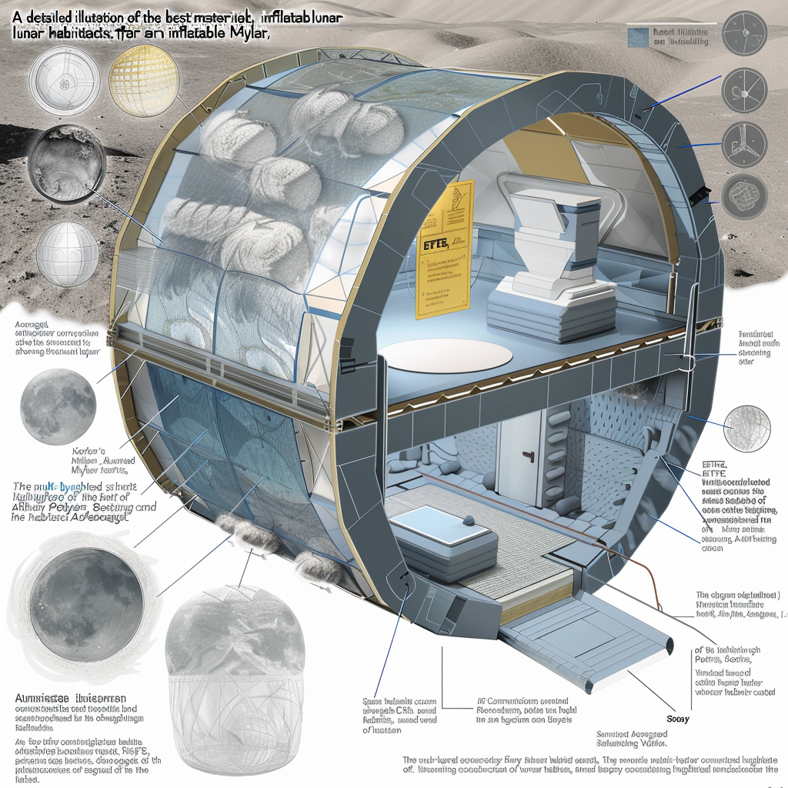

Select a file from the dropdown menu to display its content here.
Base Layout
Base Layout

Base Layout
Above-Ground Portion
Technology: Utilizes both pre-made deployable structures and 3D-printed structures.
Advantages: Offers flexibility in design and construction speed, adapting to mission-specific needs and environmental conditions.
Underground Portion
Preferred Technology: Inflatable structures combined with traditional construction techniques and 3D printing.
Advantages: Provides enhanced radiation protection and thermal insulation, crucial for long-term human habitation. Additionally, it maximizes available space for essential functions and living quarters.
Key Features
Radiation Protection: Integrates materials and design strategies to shield inhabitants from harmful cosmic radiation and solar particles.